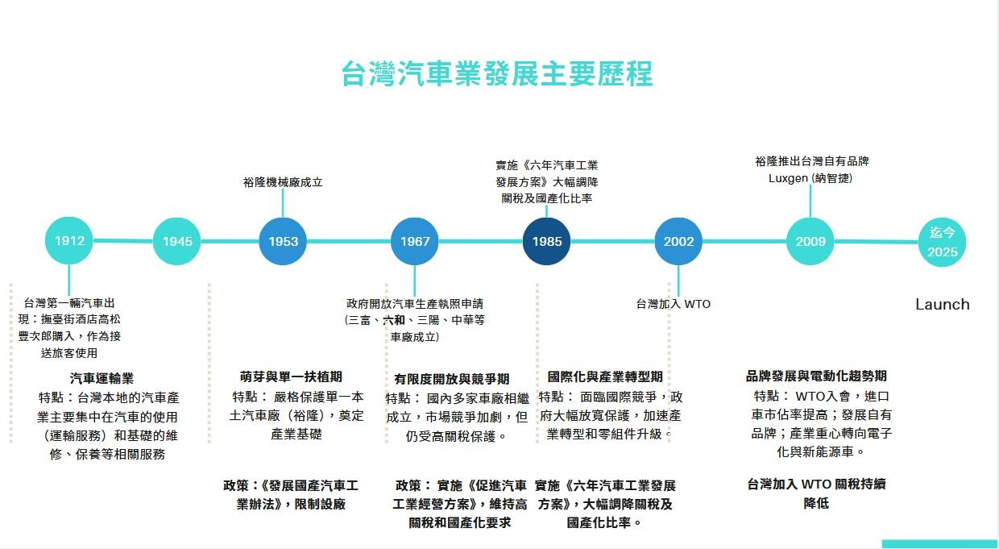

臺灣汽車工業遺產保存機制之研究
范綱智
關鍵字：汽車工業遺產;私人產業遺產;《下塔吉爾憲章》;《都柏林憲章》;文化資產保存法;都市計畫工業區變更
摘 要
臺灣的汽車工業為戰後經濟發展史中的核心產業之一，深刻見證了國內產業結構由勞力密集型轉轉型至高科技精密製造的關鍵歷程。其空間分布涵蓋桃園與苗栗等地的整車製造廠，以及桃園、中彰投、臺南與屏東等地的零組件產業聚落。隨著全球供應鏈變遷與生產技術革新，汽車工業的場址、廠房空間與機械設備經歷了頻繁的擴建、更新與轉移。然而，相較於國內已建構成熟保存機制之公營事業遺產（如糖廠、酒廠等），汽車工業場址多屬私人企業所有，且其地理位置多座落於現今高度都市化區域或緊鄰都市核心區，面臨極大的土地開發與地價溢價壓力，致使變更為純商業區或住宅區成為土地權益人的主要開發選項，造成工業遺產空間紋理與集體記憶的斷裂。
本研究依循國際憲章之精神與操作框架，回顧並檢視臺灣現行汽車工業之文資價值評估機制。在實務制度面，本研究探討臺灣《文化資產保存法》中針對私人企業不動產轉化為文化資產之誘因機制（如私有歷史建築地價稅與房屋稅減免、容積移轉等），並對照《都市計畫法》中工業區土地使用變更之劃設與回饋機制。本研究旨在解析私人企業開發利益與文化資產保存間的衝突點，透過空間紋理與法令機制的交疊分析，試圖建構出一套能兼顧「開發效益」與「工業遺產保存」平衡的整合性機制，以期為臺灣私人產業遺產的動態保存與轉型提供具體之政策建議。
在當代都市再開發與文化治理的脈絡下，大型歷史產業場址（Industrial Sites）已逐漸轉化為都市居民生活中不可或缺的公共開放空間與文化記憶載體。例如華山酒廠（華山1914）、松山菸廠（松山文創園區）以及全臺各地之臺灣糖業公司廠區，皆透過文化資產指定登錄與法定轉型程序，成功打造為具備公共性、歷史感與多元文化活動的都市地景。然而，分析上述成功案例可以發現，此類獲得妥善保存與活化利用的產業遺產，絕大多數屬於早期國營或公營事業資產，其產權單一且政府具備絕對的主導權。
相對地，同樣在戰後臺灣經濟起飛期扮演關鍵角色的「汽車製造業」，汽車工業場址不僅具備高密度的生產設備技術史價值，更紀錄了臺灣戰後產業轉型的歷程。但由於屬私人產權，加上該類廠區土地面積廣大、多位於都市邊緣漸次演變為核心區的黃金地段，在面臨產業轉型、移廠或停產時，權利人往往傾向進行都市計畫土地變更，追求最高經濟價值的土地開發（如轉變為住宅區或商業區）。這導致汽車工業遺產在文化資產評估體系中長期處於弱勢與邊緣化地位，在公眾尚未能認識其歷史文化價值前，即面臨拆除消失的命運。
本研究認為有必要將產業遺產保存的討論視野，由「公營產業」擴展至「私人企業產業」。汽車工業作為臺灣私人大型產業的典型代表，其場址保存困境正是臺灣私人產業遺產問題的縮影。
本研究以臺灣戰後「汽車整車製造企業」（如裕隆汽車、中華汽車、福特六和等）之主要製造廠區與空間場址為核心研究對象，並酌情延伸對應之核心供應鏈聚落地景。時間範圍： 設定為戰後至今（1950年代至今）。此一時期涵蓋了臺灣汽車工業從半散件組裝、全散件組裝轉型至自主研發、精密製造，乃至近年因應電動車轉型的整體歷史進程。
由於私人企業廠區屬於私有產權，研究者不易自由進入現場進行全面勘查或取得廠區圖資等限制。為突破此一研究限制，本研究採用「產業地景」（Industrial Landscape）與「都市與區域發展」（Urban & Regional Development）雙重切入角度，採取文獻分析法為主，並輔以質性研究與圖資疊加分析。具體操作方法劃分為以下四大層面：
空間紋理與變遷分析（GIS空間資訊套疊）
歷史與政策法規論述分析
法令與制度工具
周邊生活圈田野調查與質性訪談
本研究之文獻回顧聚焦於三大面向：戰後臺灣汽車工業發展史、國際工業遺產保存理論與憲章、以及國內土地保存相關法規機制。
國內關於汽車工業發展之文獻，多集中於經濟史、產業政策與技術轉移等面向（如徐進鈺、陳信雄等學者之研究）。戰後臺灣汽車工業起步於1950年代的進口替代時期，政府透過高關稅與自製率要求保護本土整車廠。1970至1980年代轉向出口導向與技術引進，形成了以桃園（如中壢、楊梅）、苗栗（如三義）為整車製造核心，中彰投與臺南、屏東為零組件配套的聚落空間型態。然而，文獻中鮮少從「文化資產」或「空間歷史遺產」的角度，探討這些高度代表戰後臺灣科技與工業轉型的廠區地景。

圖1 審查作業矩陣圖
(圖片來源：本研究繪製)
《下塔吉爾憲章》由國際工業遺產保存委員會（TICCIH）簽署，確立了工業遺產包含製造建築、機械設備、複合場址以及相關社會史價值的精神。憲章特別強調「普查（Inventory）」與「緊急搶救（Emergency Protection）」之必要性，主張工業遺產係人類工作歷史與技術進步的直接見證。
《都柏林憲章》由ICOMOS與TICCIH聯合頒布，進一步深化了工業遺產的價值管理。其核心論點主張工業遺產保存應結合「整體地景」概念，並強調公眾參與、跨領域合作以及永續都市發展中的動態適應性再利用（Adaptive Reuse）。國內關於汽車工業發展之文獻，多集中於經濟史、產業政策與技術轉移等面向（如徐進鈺、陳信雄等學者之研究）。戰後臺灣汽車工業起步於1950年代的進口替代時期，政府透過高關稅與自製率要求保護本土整車廠。1970至1980年代轉向出口導向與技術引進，形成了以桃園（如中壢、楊梅）、苗栗（如三義）為整車製造核心，中彰投與臺南、屏東為零組件配套的聚落空間型態。然而，文獻中鮮少從「文化資產」或「空間歷史遺產」的角度，探討這些高度代表戰後臺灣科技與工業轉型的廠區地景。
現行國內私人遺產保存機制之研究，多指出《文化資產保存法》對私有產權實施指定或登錄時所面臨的對立困境。雖然《文資法》設有容積移轉（第41條）、房屋稅與地價稅減免等補償手段，但在大型私人工業用地變更案中，土地容積開發之潛在商業利益遠高於文資法所能提供之租稅減免金額。
另一方面，都市計畫領域對「工業區變更」之研究（如內政部《都市計畫工業區檢討變更審議規範》），主要關注土地捐贈比例、公共設施劃設與商業效益，極少將「區內歷史建築或工業遺產之保留」納入變更條款之實質對價條件中，致使文資保存與都市計畫變更長期呈現雙軌運作、缺乏整合。
本研究之文獻回顧聚焦於三大面向：戰後臺灣汽車工業發展史、國際工業遺產保存理論與憲章、以及國內土地保存相關法規機制。
國內關於汽車工業發展之文獻，多集中於經濟史、產業政策與技術轉移等面向（如徐進鈺、陳信雄等學者之研究）。戰後臺灣汽車工業起步於1950年代的進口替代時期，政府透過高關稅與自製率要求保護本土整車廠。1970至1980年代轉向出口導向與技術引進，形成了以桃園（如中壢、楊梅）、苗栗（如三義）為整車製造核心，中彰投與臺南、屏東為零組件配套的聚落空間型態。然而，文獻中鮮少從「文化資產」或「空間歷史遺產」的角度，探討這些高度代表戰後臺灣科技與工業轉型的廠區地景。
本研究透過系統性的歷史脈絡梳理、GIS空間套疊與法令機制評析，預期將達成以下幾項成果與機制建議。
呼應《下塔吉爾憲章》對普查之重視，本研究預期建構臺灣戰後汽車工業遺產之基礎空間圖資與動態演變歷程，擬定包含「技術史價值」、「空間建築價值」、「社會經濟記憶」與「都市地景價值」之綜合評估指標，為未來私有產業遺產之緊急搶救與評估提供科學化依據。
本研究企圖打破文資與都市計畫單獨作業的藩籬，提出「開發與保存雙贏」的政策誘因組合：
都市計畫變更條款之文資連結（文資對價機制）： 建議修正或善用都市計畫變更審議規範，將私人土地開發變更過程中的「回饋負擔（如公共設施用地捐贈或容積回饋）」，允許企業以「保留區內工業遺產並進行活化修復」來抵充部分捐贈比例，降低企業將文資視為開發阻礙的對立情緒。
差異化容積移轉與容積獎勵（容積加碼）： 針對私有工業遺產實施現地保留並提供公共開放者，設計更具彈性與吸引力的容積轉移折算公式，增強私人企業主動申請登錄文化資產的經濟誘因。
呼應《下塔吉爾憲章》對普查之重視，本研究預期建構臺灣戰後汽車工業遺產之基礎空間圖資與動態演變歷程，擬定包含「技術史價值」、「空間建築價值」、「社會經濟記憶」與「都市地景價值」之綜合評估指標，為未來私有產業遺產之緊急搶救與評估提供科學化依據。
本研究以汽車工業為起點，其歸納出之機制可進一步推廣至其他大型私人產業遺產（如纺織業、家電製造業、半導體早期廠房等），為臺灣私人產業遺產保存建立全新之理論與操作典範。
文化部文化資產局（2018）。《臺灣工業遺產保存與活化策略研究報告》。臺中：文化部文化資產局。林崇熙（2008）。工業遺產的轉型與再生：從技術史到文化資產。《文化資產學刊》，第4期，頁15-38。
傅朝卿（2014）。論產業遺產的文化價值與動態保存觀點。《歷史文物》，第24卷第8期，頁22-29。